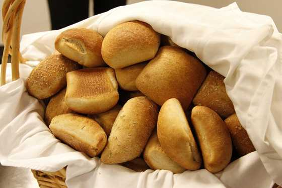
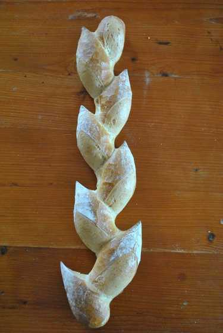
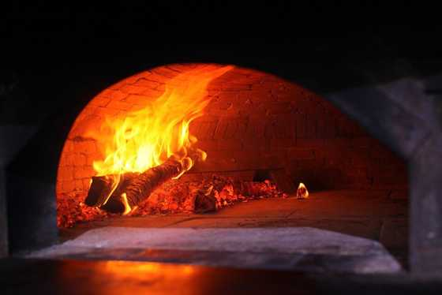

ABOUT
住宅街の、週末のパン屋さん
「はみぃ」は2022年10月、三沢市さつきヶ丘の住宅街にオープンした、手作りのパンとおいなりのお店です。パンは国産小麦を使い、ガスオーブンで焼いていると紹介されています。
営業は土曜・日曜の11時から18時まで(紹介記事・地域情報サイトより)。商品がなくなり次第、終了となります。月曜から金曜は祝日でもお休みと、店のInstagramに案内があります。
店名の意味や開店のきっかけは、確認できていません。このページでは断定せず、載せていません。

PHOTO
パンの景色(イメージ)
写真はフリー素材のイメージで、お店の実際の様子や商品ではありません。国外・撮影地不明のものを含みます。








ほか冒頭の写真もあわせ、計15枚。縮小などの加工をしています。ライセンスは creativecommons.org をご覧ください。
VOICE
口コミ
イメージ例
週末の楽しみに寄っています。塩パンが焼きたてで、帰り道まで待てませんでした。
イメージ例
おいなりが小さめで食べやすく、パンと一緒に買うのにちょうどよかったです。
イメージ例
住宅街の中にあって、のんびりした雰囲気。また土日に行きます。
上の3件は制作側が作った例文で、実際のお客様の声ではありません。
ACCESS
アクセス
| 住所 | 〒033-0155 青森県三沢市さつきヶ丘1丁目23−45 |
|---|---|
| 営業 | 土日 11:00〜18:00(なくなり次第終了。月〜金は休み。月末週の土日は定休日との情報あり)。変更される場合があります。 |
| 電話 | 準備中 |
| 駐車場 | 1台分との情報あり(要確認) |
| SNS | Instagram @hamiy_pantooinari |